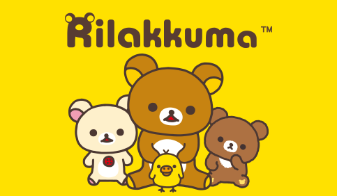
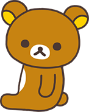
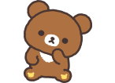

|

“Rilakkuma” means “Bear in relaxed mood”. |
|

Rilakkuma
This bear costume, known as Rilakkuma came out of nowhere and visited Kaoru’s house one day. |
Korilakkuma
Korilakkuma is a white bear cub, but nobody knows where it came from. |
|
Kiiroitori
The yellow bird that Kaoru was keeping as a pet before Rilakkuma and the others came. |

Chairoikoguma
Chairoikoguma lives in the Honey Forest and is friends with Korilakkuma. |